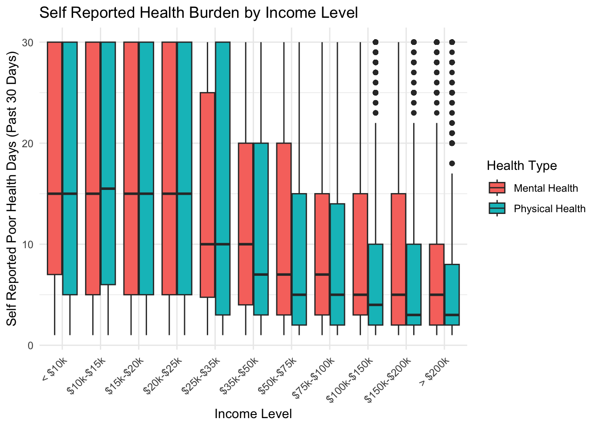
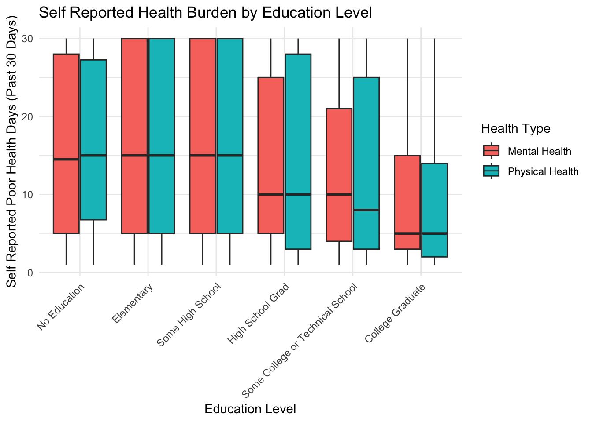
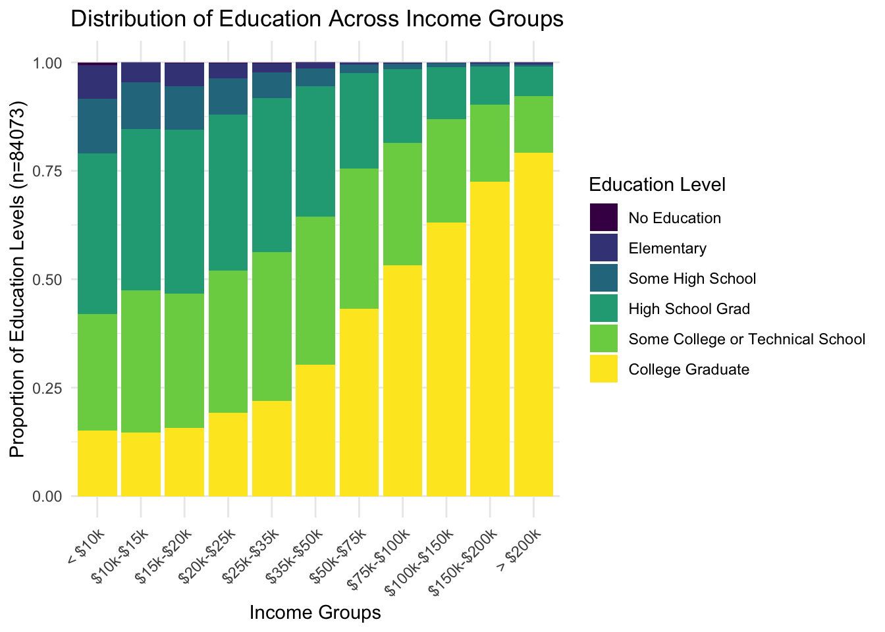
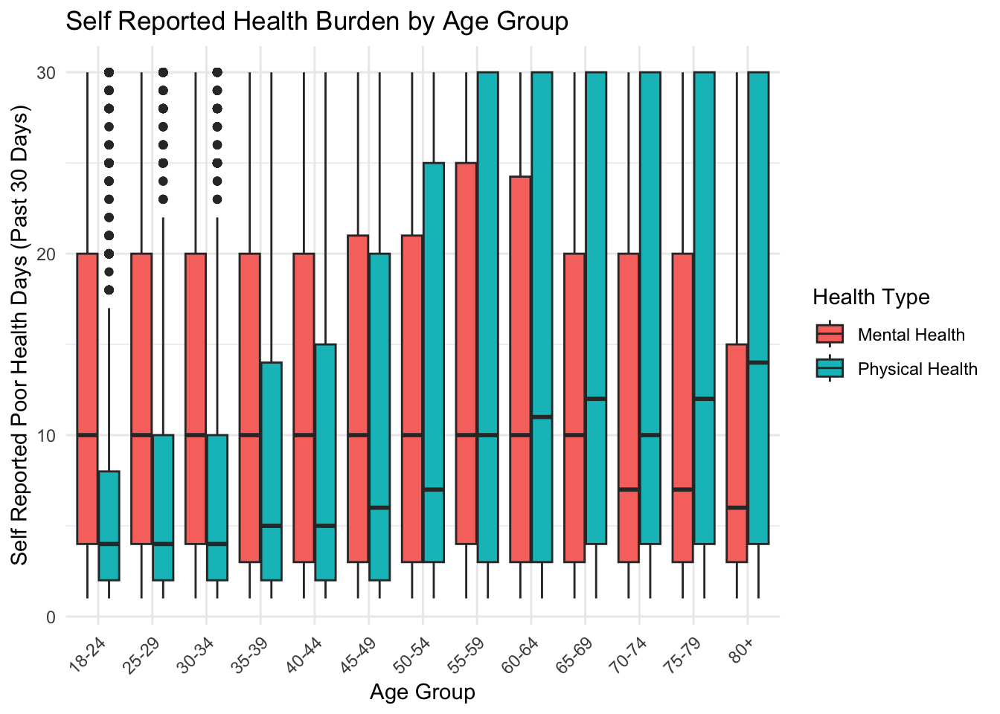
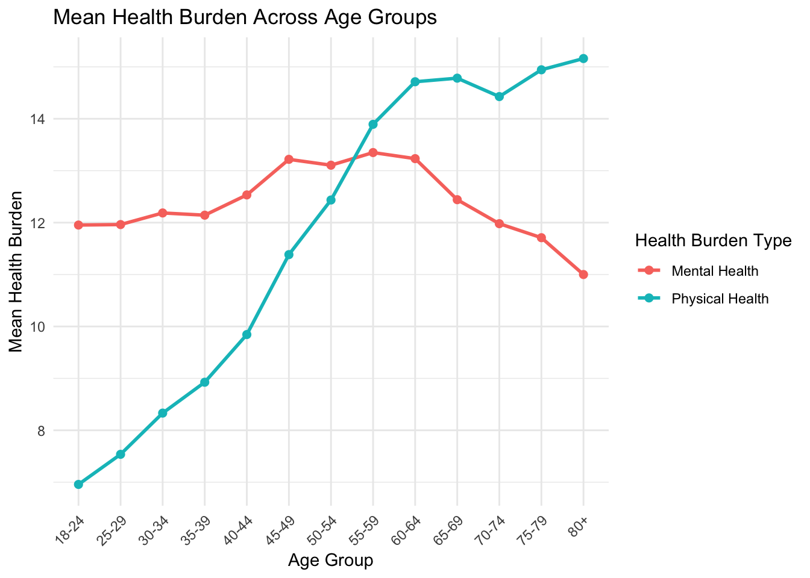
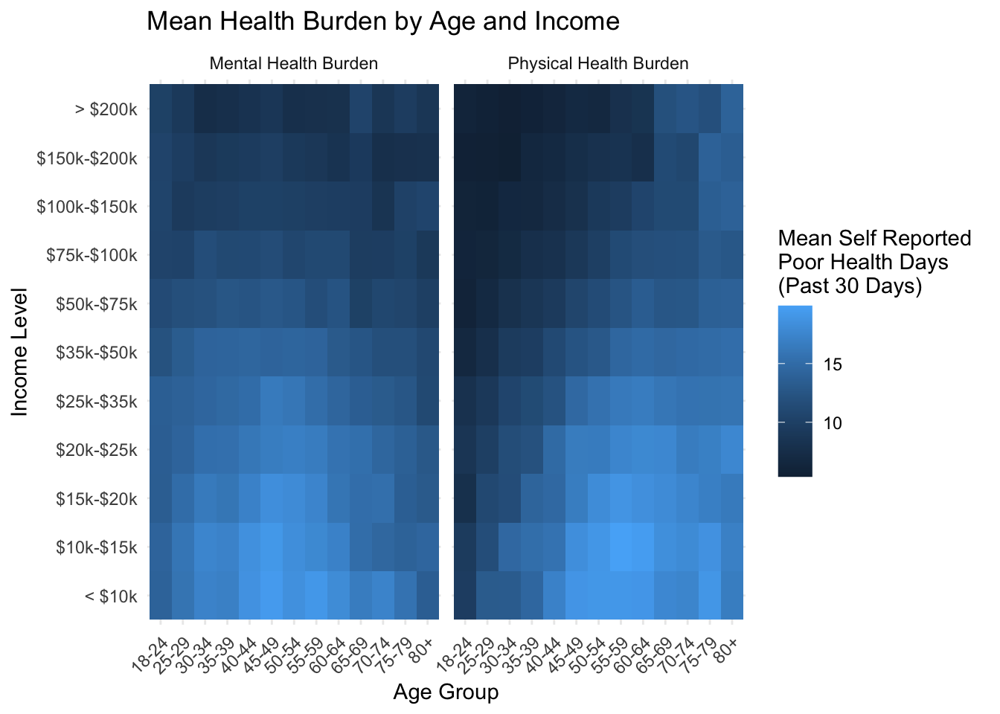

Socioeconomic and Demographic Patterns in Mental and Physical Health Burden (BRFSS 2024)
1 Introduction
Health outcomes in population data are shaped by a combination of socioeconomic and demographic factors. Understanding how these factors relate to both mental and physical health is important for identifying patterns of health inequality and variation within populations.
This analysis uses data from the Behavioral Risk Factor Surveillance System (BRFSS), a large-scale health survey conducted in the United States, to examine how self-reported mental and physical health burden vary across income, education, and age groups.
Income and education are commonly used indicators of socioeconomic status, while age captures life-course variation in health. Mental and physical health burden are analyzed separately to assess whether these domains follow similar or distinct patterns across these factors.
The primary aim of this analysis is to explore how self-reported health burden is associated with socioeconomic position and age, and to examine whether these relationships differ between mental and physical health outcomes.
2 Methods
The Behavioral Risk Factor Surveillance System (BRFSS) 2024 dataset was used for this analysis. The full dataset was imported from the CDC-provided XPT file and reduced to variables relevant to socioeconomic status and health outcomes.
This analysis uses publicly available BRFSS 2024 survey data. All transformations and analyses are fully reproducible using the provided code.
2.1 Variables
The following variables were extracted for analysis:
- Mental health burden (number of poor mental health days in past 30 days)
- Physical health burden (number of poor physical health days in past 30 days)
- Income level (ordinal categories)
- Education level (ordinal categories)
- Age group (5-year bins)
All observations with missing values in income, education, age, or health burden variables were removed. The final analytic sample includes only complete cases across all variables.
2.2 Data Cleaning
Special numeric codes used in BRFSS to represent missing or inapplicable responses (e.g., 77, 88, 99) were recoded as standard missing values (NA). Observations with missing values in any analysis variable were excluded to ensure consistency across all comparisons.
Only complete cases were retained for analysis.
2.2.1 Sample Size Before and After Cleaning
The analytic sample was reduced from 457,670 observations to 84,073 observations after removing incomplete cases. This represents a retention rate of 18.4%.
2.2.2 Reshaping for Comparative Analysis
To facilitate comparison between mental and physical health outcomes, data were reshaped from wide to long format. This allowed both outcomes to be analyzed within the same modeling and visualization framework.
2.3 Statistical Approach
The analysis is exploratory and descriptive. No inferential statistical models were applied. Relationships between variables are assessed using:
- Grouped summary statistics (means)
- Boxplots to examine distributional differences
- Heatmaps to visualize joint distributions across age and income strata
All analyses were conducted in R using the tidyverse ecosystem.
The following analyses examine patterns in self-reported mental and physical health burden across income, education, and age. Results are descriptive and intended to characterize observed relationships within the analytic sample rather than establish causal effects.
3 Results
This section examines how mental and physical health burden vary across key socioeconomic and demographic dimensions, including income, education, and age, and how these factors interact jointly.
3.1 Income and Health Burden
Self-reported mental and physical health burden show clear gradients across income levels.
Mental health burden decreases gradually with increasing income, showing a relatively smooth socioeconomic gradient. Physical health burden also declines with income but exhibits a sharper drop at lower-to-middle income brackets before stabilizing at higher income levels.
Overall, both domains show a strong inverse relationship with income, with mental health appearing slightly more sensitive to low-income conditions.
3.2 Education and Health Burden
Health burden also varies across education levels, though the pattern is less linear than income.

Both mental and physical health burden are higher at lower education levels and generally decline as education increases. However, the relationship is noisier than income, with smaller stepwise changes between intermediate education categories.
At the highest education level (college graduates), both mental and physical health burden converge at comparatively low values.
3.3 Income and Education Structure
Income and education show a strong positive association.

Lower income groups are heavily concentrated in lower education categories, while higher income groups contain a larger proportion of college graduates. This reflects a strong socioeconomic gradient linking education and income, though some dispersion is present across intermediate levels.
3.4 Age and Health Burden
Health burden varies non-linearly across age groups.
3.4.1 Distributional Patterns

3.4.2 Mean Age Trajectories

Physical health burden increases steadily with age, peaking in older age groups. Mental health burden follows a different pattern, increasing into mid-life before declining in older age groups.
This divergence suggests that mental and physical health burdens follow distinct age-related trajectories.
3.5 Joint Distribution of Age, Income, and Health
To examine how age and income jointly relate to health burden, mean values were computed across strata.

This figure shows the joint distribution of health burden across age and income strata. Income consistently structures health outcomes across nearly all age groups, with lower income groups exhibiting higher average health burden.
Mental health burden shows a more pronounced mid-life concentration pattern, while physical health burden increases more uniformly with age.
Unlike previous plots that isolate single variables, this figure highlights how age and income interact to shape health outcomes simultaneously, with income remaining the dominant stratifying factor across the lifespan.
4 Discussion
4.1 Socioeconomic Factors in Health Burden
Health burden varies substantially across income, age, and education groups. Rather than identifying a single dominant predictor, the present analysis suggests that health burden is structured by multiple interacting dimensions that influence both the severity and pattern of reported health outcomes.
Income demonstrates a consistent relationship with both mental and physical health burden. Lower income groups generally report greater health burden, while higher income groups report fewer poor health days across both domains. However, these findings should not be interpreted as evidence of a direct causal relationship. Instead, higher income may reflect access to social, economic, and environmental resources associated with lower reported health burden.
4.2 Age, Life Course, and Health Burden
Importantly, age-related patterns remain visible within nearly every income group. Although higher income groups consistently report lower overall burden, similar age-related trends appear across the income spectrum. This suggests that income primarily influences the overall magnitude of health burden, while age shapes how health burden changes across the life course.
Education also demonstrates a relationship with health burden, although this association appears weaker and less consistent than that observed for income. Higher education levels are strongly concentrated within higher income groups, while lower education levels are more heavily represented among lower income groups. Consequently, some of the observed relationship between education and health burden may reflect broader socioeconomic structure. The present analysis cannot determine the independent contribution of education separate from income.
4.3 Divergent Mental and Physical Health Trajectories
Mental and physical health burden exhibit distinct age-related trajectories. Physical health burden increases steadily across the lifespan, consistent with cumulative physiological decline and age-related health conditions. In contrast, mental health burden follows a non-linear pattern, increasing through middle adulthood before declining in older age groups.
These differing trajectories suggest that mental and physical health burdens reflect different underlying processes. Physical health burden appears closely associated with aging, whereas mental health burden may be influenced by social, occupational, economic, and psychological factors that vary across the life course.
One particularly notable finding is the convergence of mental and physical health burden among the oldest age groups. By age 80 and older, both domains report comparatively similar levels of burden across income categories. The reasons for this convergence cannot be determined from the present analysis, but it may reflect changes in expectations surrounding health, survivor effects, adaptation to chronic conditions, or limitations in the sampled population.
4.4 Limitations
Several limitations should be considered. First, all measures are self-reported and may be influenced by recall bias, reporting bias, or differences in individual perceptions of health. The 30-day reporting window captures recent health experiences rather than long-term health status.
Second, the analysis relies on complete-case observations only. This substantially reduces the analytic sample and assumes that missingness occurs randomly. If individuals experiencing greater health burden are less likely to complete survey items, estimates of health burden may be biased downward.
Third, the BRFSS sampling design may underrepresent certain populations, particularly older adults residing in institutional settings such as nursing facilities or long-term care centers. Consequently, reported health burden among the oldest age groups may not fully represent the broader elderly population.
Finally, the cross-sectional design of the BRFSS prevents causal interpretation. The present findings identify associations between demographic and socioeconomic variables and reported health burden but cannot determine the direction or mechanism of these relationships.
4.5 Future Directions
Future analyses could further investigate the relative contributions of age, income, and education using multivariable statistical approaches such as regression modeling. Such analyses could help determine whether the effects observed for education remain after accounting for income and whether interactions between age and socioeconomic factors significantly influence health burden.
Additionally, longitudinal data would allow examination of how health burden changes within individuals over time. Future research may also benefit from incorporating additional variables related to employment status, marital status, healthcare access, or chronic disease burden to better understand the mechanisms underlying these observed patterns.
Further examination of education after controlling for income may help determine whether education demonstrates an independent association with health burden. Such analyses could investigate whether differences in mental or physical health burden persist among individuals with similar incomes but differing levels of educational attainment.
4.6 Conclusion
Overall, the findings suggest that self-reported health burden is shaped by both socioeconomic position and life-course factors. Income is associated with the overall level of reported burden, while age influences how health burden changes across the lifespan. The differing trajectories of mental and physical health further suggest that these domains should not be treated as interchangeable measures of population health.